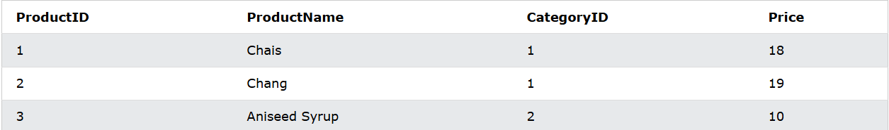

The SQL JOIN statement is used to combine rows from two tables based on a common
column and selects records that have matching values in these columns.
Example:
Here, the SQL command joins the Customers and Orders tables based on the common
column, customer_id of both tables.
The result set will consist of
- customer_id and first_name columns from the Customers table
- item column from the Orders table
Here,
- table1 and table2 are the two tables that are to be joined
- column1 is the column in table1 that is related to column2 in table2
Example: Join Two Table Based on Common Column
Here, the SQL command selects the columns:
- customer_id and first_name from the Customers table
- amount from the Orders table
The result set will contain those values where there is a match between customer_id (of
the Customers table) and customer (of the Orders table).
Here are the different types of the JOINs in SQL:
- (INNER) JOIN: Returns records that have matching values in both tables
- LEFT (OUTER) JOIN: Returns all records from the left table, and the matched records from the right table
- RIGHT (OUTER) JOIN: Returns all records from the right table, and the matched records from the left table
- FULL (OUTER) JOIN: Returns all records when there is a match in either left or right table
The INNER JOIN keyword selects that have matching values in both tables.
Let's look at a selection of the Products table:

And a selection of the Categories table:
We will join the Products table with the Categories table, by using the CategoryID field from both tables
Example
Join Products and Categories with the INNER JOIN keyboard:
Note: The INNER JOIN keyword returns only rows with a match in both tables. Which
means that if you have a product with no CategoryID, or with a CategoryID that is not
present in the Categories table, that record would not be returned in the result.
Example
Specify the table names:
The example above works without specifying table names, because none of the specified
column names are present in both tables. If you try to include CategoryID in
the SELECT statement, you will get an error if you do not specify the table name
(because CategoryID is present in both tables).
The LEFT JOIN keyword returns all records from the left table (table1), and the matching
records from the right table (table2). The result is 0 records from the right side, if there is
no match.
LEFT JOIN Syntax

Note: In some databases LEFT JOIN called LEFT OUTER JOIN.
Below is a selection from the "Customer" table:
And a selection from the "Orders" table:
The following SQL statement will select all customer, and any orders they might have:
Example:
Note THE LEFT JOIN keyword returns all records from the left table
(Customer), even if there are no matches in the right table(Orders).
The SQL RIGHT JOIN statement joins two tables based on a common column. It selects
records that have matching values in these columns and the remaining rows from the
right table.
Example:
Here, the code right joins the Customers and Orders tables based on customer_id, which
is common to both tables. The result set contains
- customer_id and first_name columns from the Customers table
-
item column from the Orders table (including those whose customer_idvalue is not
present in the Customers table)
The syntax of the SQL RIGHT JOIN statementn is:
Here,
- table1 is the left table to be joined
- table2 is the right table to be joined
- column1 and column2 are the related columns in the two tables
Here, how this code works:
Here, the SQL command selects the customer_id and first_name columns (from
the Customers table) and the amount column (from the Orders table).
And, the result set will contain those rows where there is a match between customer_id
(of the Customers table) and customer (of the Orders table), along
with all the remaining rows from the Orders table.
Note: RIGHT JOIN is not supported by our online SQL compiler since it's based on SQLite.
However, you can get the same results by using a LEFT JOIN and swapping the left and
right tables.
Example: SQL FULL OUTHER JOIN Keyword
The SQL RIGHT JOIN statement joins two tables based on a common column. It selects
records that have matching values in these columns and the remaining rows from the
right table.
Example:
Here, the SQL query performs a FULL OUTER JOIN on two tables, Customers and Orders.
This means that the result set contains all the rows from both tables, including the ones
that don't have common customer_id values.
The syntax of the SQL FULL OUTER JOIN statement is:
Here,
- table1 and table2 are the tables to be joined
- column1 and column2 are the related columns in the two tables
Here, the SQL command selects the customer_id and first_name columns (from
the Customers table) and the amount column (from the Orders table).
The result set will contain all rows of both the tables, regardless of whether there is a match
between customer_id (of the Customers table) and customer (of the Orders table).
FULL OUTER JOIN With WHERE Clause
The SQL FULL OUTER JOIN statement can have an optional WHERE clause. For example,
Here, the SQL command joins two tables and selects rows where the amount is greater
than or equal to 500
SQL FULL OUTER JOIN With AS Alias
We can use AS aliases inside FULL OUTER JOIN to make our query short and clean.
Example
Here, the SQL command performs a full outer join on the Categories and Products tables
while assigning the aliases C and P to them, respectively.
The HAVING clause was added to SQL because the WHERE keyword cannot be used with
aggregate functions.
Having Syntax
Below is a selection from the "Customers" table in the Northwind sample database:
The following SQL statement lists the number of customers in each country. Only include
countries with more than 5 customers
Example
Below is a selection from the "Orders" table in the Northwind sample database:
And a selection from the "Employees" table:
The following SQL statement lists the employees that have registered more than 10 orders:
Example
The following SQL statement lists if the employees "Davolio" or "Fuller" have registered more
than 25 orders:
Example
In SQL, a SELECT statement may contain another SQL statement, known as a subquery
or nested query.
Example
Here, the query is divided into two parts:
- the subquery selects the maximum age from the Customer table
- the outer query selects the first_name of the customer with the maximum id
(returned by the subquery)
Here, the query is divided into two parts:
- column is the name of the column(s) to filter
- OPERATOR is any SQL operator to connect the two people
- table is the name of the table to fetch the column from
Example: Select Customers with Minimum Age Using Subquery
Here is how the query filters the table.
In a subquery the outer query's result depends on the result set of the inner
subquery. That's why subqueries are also called nested queries.
Here, is how this code works:
- executes the subquery first (inner query), and returns the minimum
age 22
- executes the outer query, and selects customer with age 22